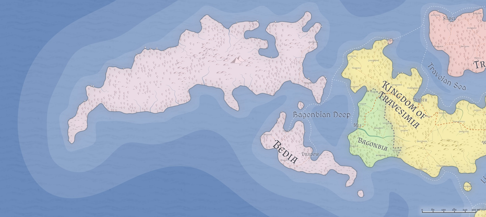

Bedia / The Kingdom of Bedia
- Government: Kingdom
- Capital: Dradow
- Population: 2 million (~30% human, ~30% firstborn, ~20% Created, ~20% Hordish; 10% urban)
- Area: 500,000 sq mi
Geography

Government
TODO, Queen of Bedia
Bedia is a kingdom, passed from the current occupant to the firstborn child of the current King and Queen. The King or Queen is advised by a Council of Nobles, which may veto a Royal Decree with a two-thirds majority vote. Either the King/Queen or the Council can put forth a law (the King/Queen by Decree, the Council by majority vote); in practice the Council passes long-term laws while the King/Queen focuses on Decrees that address the immediate situation facing the nation.
In the event that there is no direct heir, the Council of Nobles meets and selects the Heir, again with a two-thirds majority vote.
Much, if not most, of Bedian policy centers around (a) the growth of settlement in Northern Bedia, (b) defense against the things spawned in the wilderness of Northern Bedia, (c) maintaining good relations with both Bagonbia and Travesimia, and (d) repelling periodic skirmish efforts by both Bagonbia and Travesimia.
Political Structure
Population
The actual population of Bedia is difficult to ascertain, as much (some say all) of Northern Bedia is entirely wildnerness, and therefore almost entirely outside of census. Bedia has a history of accepting any and all visitors, and the Kingdom's legal texts promise complete equality to any who settle within Bedian borders (and pay their taxes).
In practice, Bedians are a hardy lot, fiercely independent and communal; outsiders are greeted with suspicion, but over time will be accepted into the community if the outsider demonstrates their desire to do so and their willingness to contribute to the common good and defense. Many are former veterans of the Chidian Wars, and so it is not uncommon to see a Bedian village boast a militia whose numbers are roughly equivalent to their population.
However, Bedian population is sparse, and more than two-thirds of it is clustered on the isle of Bedia proper. In fact, 80% of the population of Northern Bedia is clustered within twenty miles of the eastern coast, leaving most of Northern Bedia an entirely unclaimed wilderness.
Culture
Relations
Bagonbia: Neutral.
Ulm:
Zhi: